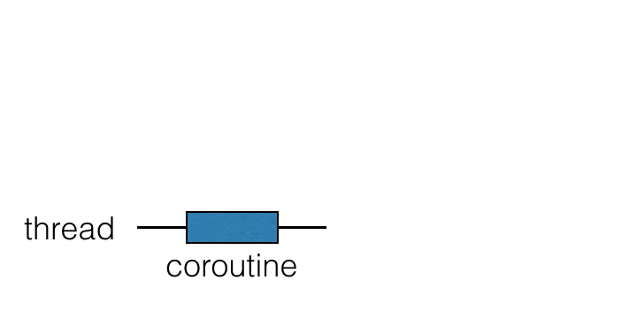
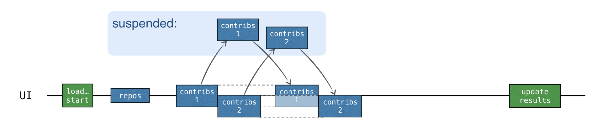
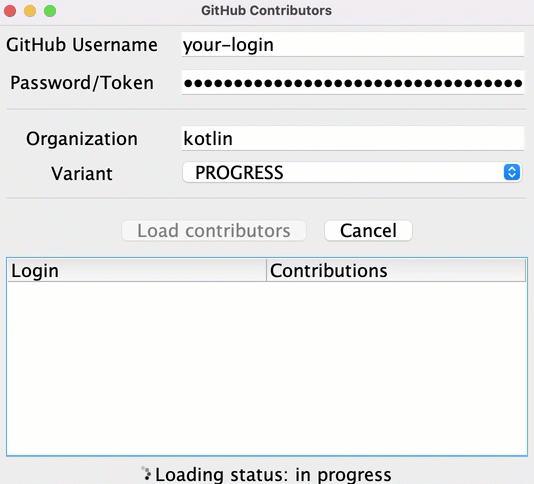
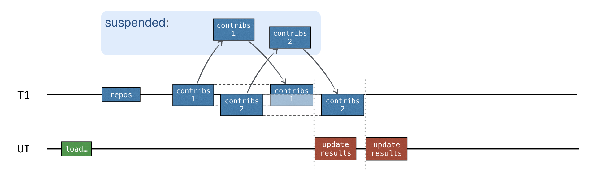

我们会在 IntelliJ IDEA 里修改一个桌面程序。目标是发出网络请求时，窗口仍能响应操作，业务代码也不用拆成层层回调。
学完这个项目，你将实际用到以下三种能力。
用挂起函数发出网络请求，并说明等待期间线程可以做什么。
用协程并发请求多个仓库的数据。
用通道让不同协程交换结果。
项目使用 Retrofit 访问网络。换成其他支持挂起调用的库，组织代码的思路仍然适用。
开始前的准备
下载并安装 IntelliJ IDEA。
-
在欢迎页选择 Get from VCS，或在菜单中选择 File → New → Project from Version Control，克隆示例项目。 project template
也可以用下面的命令取得项目。
git clone https://github.com/kotlin-hands-on/intro-coroutines
准备访问 GitHub 的令牌
项目通过 GitHub API 读取贡献者。实际运行时请使用 GitHub 用户名和访问令牌。旧版教程界面把凭据字段标为密码；现在 GitHub REST API 的这类认证使用令牌。
为自己的账户生成一个供本练习使用的 GitHub 令牌。 your account
-
给令牌起一个容易辨认的名字，例如
coroutines-tutorial。
原教程演示的是 classic token，仅读取公开数据，不勾选额外 scope，然后点击 Generate token。
复制新令牌，用在本机示例的凭据输入框里。
启动程序
应用先加载某个组织的所有仓库及其贡献者，默认组织是 kotlin。稍后要把同一个人在不同仓库的贡献次数相加，再按总数排序。
-
打开
src/contributors/main.kt，运行main()，会出现下图所示的窗口。
如果字体太小，可调整
main()里的setDefaultFontSize(18f)。 填入自己的 GitHub 用户名和刚创建的令牌。
在 Variant 下拉框中选择 BLOCKING。
点击 Load contributors。加载期间尝试操作窗口，观察它冻结一段时间后才显示贡献者列表。
查看运行输出。每次请求成功后会记录相应的贡献者数据，用它核对加载进度。
接下来在同一个界面里切换阻塞、回调和协程版本，最后用通道把多个请求的结果汇在一起。 blocking requests · callbacks · coroutines · channels
阻塞式请求
Retrofit 把 GitHub 的两个 HTTP 接口包装成 Kotlin 方法，一个查询组织下的仓库，另一个查询指定仓库的贡献者。
interface GitHubService {
@GET("orgs/{org}/repos?per_page=100")
fun getOrgReposCall(
@Path("org") org: String
): Call<List<Repo>>
@GET("repos/{owner}/{repo}/contributors?per_page=100")
fun getRepoContributorsCall(
@Path("owner") owner: String,
@Path("repo") repo: String
): Call<List<User>>
}loadContributorsBlocking() 用这些接口取回组织的贡献者列表。
-
打开
src/tasks/Request1Blocking.kt，沿着代码旁的编号阅读。fun loadContributorsBlocking( service: GitHubService, req: RequestData ): List<User> { val repos = service .getOrgReposCall(req.org) // #1 .execute() // #2 .also { logRepos(req, it) } // #3 .body() ?: emptyList() // #4 return repos.flatMap { repo -> service .getRepoContributorsCall(req.org, repo.name) // #1 .execute() // #2 .also { logUsers(repo, it) } // #3 .bodyList() // #4 }.aggregate() }首先把仓库列表存入
repos。然后逐个查询仓库，将每个仓库返回的贡献者列表合并起来。在标记 1，
getOrgReposCall()和getRepoContributorsCall()都只创建 Retrofit 的 Call 对象，还没发送请求。在标记 2，调用 Call.
execute()才开始请求。它会同步等待，期间占用调用线程。在标记 3，
logRepos()和logUsers()记录响应；HTTP 响应带有错误时，也会留下日志。在标记 4，从响应体取得所需数据。教程为简化处理，会记录错误，并在没有数据时使用空列表。
-
用扩展函数
bodyList()封装重复出现的.body() ?: emptyList()。fun <T> Response<List<T>>.bodyList(): List<T> { return body() ?: emptyList() } -
再次运行程序，查看 IntelliJ IDEA 的运行输出，与下面的日志比较。
1770 [AWT-EventQueue-0] INFO Contributors - kotlin: loaded 40 repos 2025 [AWT-EventQueue-0] INFO Contributors - kotlin-examples: loaded 23 contributors 2229 [AWT-EventQueue-0] INFO Contributors - kotlin-koans: loaded 45 contributors ...每行开头是程序启动后经过的毫秒数，方括号内是线程名，据此可查出加载代码从哪条线程发起。
行末才是消息本身，说明加载了多少仓库或贡献者。
BLOCKING 版本中，日志都来自 Swing 的事件分发线程，也就是主 UI 线程。
loadContributorsBlocking()在这条线程上依次请求并等待，窗口事件因此排队，用户的输入得不到响应。
全部列表加载完之后，界面才更新。
-
打开
src/contributors/Contributors.kt，在负责选择加载方式的loadContributors()里找到阻塞版本的调用。when (getSelectedVariant()) { BLOCKING -> { // Blocking UI thread val users = loadContributorsBlocking(service, req) updateResults(users, startTime) } }updateResults()紧接在loadContributorsBlocking()后执行。更新窗口必须在 UI 线程进行，因此
updateResults()的位置有线程要求。加载函数也在这条线程上同步等待，正是窗口卡住的原因。
任务 1 · 合并同一位贡献者
先把数据处理正确。同一位用户每参与一个仓库就多出现一行。实现 aggregate()，让每个用户只出现一次，User.contributions 保存其跨仓库总数，列表按总贡献数降序排列。
在 src/tasks/Aggregation.kt 中实现 List<User>.aggregate()。
test/tasks/AggregationKtTest.kt 给出了输入及预期结果，可用来检查去重和排序。
完成后，用 kotlin 组织的数据对照下图的列表形式；真实贡献次数会随时间变化。

任务 1 参考解法
按 login 执行 groupBy()。得到的映射里，每个登录名对应同一用户在不同仓库出现的记录。
遍历每组，累加 contributions，用登录名和总数构造一个新的
User。-
将结果按贡献数从高到低排序。
fun List<User>.aggregate(): List<User> = groupBy { it.login } .map { (login, group) -> User(login, group.sumOf { it.contributions }) } .sortedByDescending { it.contributions }
也可以用 groupingBy() 做分组累加。
回调
处理结果已经正确，接下来解决窗口冻结。传统解决办法是把工作完成后要做的事写成回调。
将后续逻辑提取成函数（常写成 lambda），交给发起操作的一方，等操作结束再调用。
可以把整个计算移到另一条线程，也可以让 Retrofit 异步发起请求，在回调中接收响应。我们分别试一次。
把加载移到后台线程
-
打开
src/tasks/Request2Background.kt。thread()启动一条新线程，整个加载过程转到那里。thread { loadContributorsBlocking(service, req) }主线程因此空出来，可以处理鼠标、键盘和绘制事件。

-
loadContributorsBackground()多了一个参数updateResults()，用于所有加载完成后交付结果。fun loadContributorsBackground( service: GitHubService, req: RequestData, updateResults: (List<User>) -> Unit ) -
调用方把更新界面的代码放进回调，等后台真正完成后才运行。
loadContributorsBackground(service, req) { users -> SwingUtilities.invokeLater { updateResults(users, startTime) } }SwingUtilities.invokeLater会把更新操作排回 Swing 的 UI 事件分发线程。
现在选 BACKGROUND 加载。日志里能看到数据，窗口列表却没有变化。沿着回调找原因。
任务 2 · 让结果回到界面
修复 src/tasks/Request2Background.kt 里的 loadContributorsBackground()，让窗口显示计算后的列表。
任务 2 参考解法
数据已经加载，缺的是交付。取得最终用户列表后，以它为参数调用 updateResults()。
thread {
updateResults(loadContributorsBlocking(service, req))
}传入 lambda 只代表准备好了后续动作，必须在完成处真正调用它。
使用 Retrofit 的异步回调
把整个流程挪到后台改善了界面响应，但网络请求仍逐个进行，后台线程也一直在等。一个仓库等待响应时，本来已经可以请求下一个仓库。
现在把每个请求拆成「发起加载」和「处理响应」两段，用回调执行第二段。
前一个仓库返回前，后一个仓库的请求就能先发出去。

Retrofit 的 Call.enqueue() 启动 HTTP 请求，并接受回调，用来描述请求完成后的处理。
打开 src/tasks/Request3Callbacks.kt，查看 loadContributorsCallbacks() 如何使用这个接口。
fun loadContributorsCallbacks(
service: GitHubService, req: RequestData,
updateResults: (List<User>) -> Unit
) {
service.getOrgReposCall(req.org).onResponse { responseRepos -> // #1
logRepos(req, responseRepos)
val repos = responseRepos.bodyList()
val allUsers = mutableListOf<User>()
for (repo in repos) {
service.getRepoContributorsCall(req.org, repo.name)
.onResponse { responseUsers -> // #2
logUsers(repo, responseUsers)
val users = responseUsers.bodyList()
allUsers += users
}
}
}
// TODO: Why doesn't this code work? How to fix that?
updateResults(allUsers.aggregate())
}同一文件里的
onResponse()扩展接收 lambda，省去写匿名对象的步骤。标记 1、2 是两个回调的开头，分别处理仓库响应和贡献者响应。
选 CALLBACKS 运行，界面没有显示数据，可 Request3CallbacksKtTest 却立刻通过。测试很快结束本身不能证明异步工作已经完成。
试着判断是哪个动作执行得太早，再看下面的几次修正。
任务 3 · 修复异步回调（选做）
修改 src/tasks/Request3Callbacks.kt，使加载到的贡献者确实显示在界面上。
第一次尝试：按最后一个索引判断
并发请求缩短了潜在等待时间，但当前代码刚发完请求就调用 updateResults()，响应还没填进 allUsers。
可以先尝试把更新逻辑移进回调。
val allUsers = mutableListOf<User>()
for ((index, repo) in repos.withIndex()) { // #1
service.getRepoContributorsCall(req.org, repo.name)
.onResponse { responseUsers ->
logUsers(repo, responseUsers)
val users = responseUsers.bodyList()
allUsers += users
if (index == repos.lastIndex) { // #2
updateResults(allUsers.aggregate())
}
}
}标记 1 用索引遍历 repos。
标记 2 在每个回调里检查自己是否对应列表中的最后一个仓库。
如果是最后一个索引，就更新结果。
试着让最后发出的请求最先返回，看看列表会缺哪部分，再往下读。
第二次尝试：统计实际完成数
各请求并发执行，完成顺序取决于网络与服务端，列表最后一个仓库的响应完全可能最先回来。
用当前索引与 lastIndex 比较，会把「最后发出」误当成「最后完成」。
一旦最后一个仓库先返回，晚到的仓库就赶不上这次界面更新。
可以另外计数，每完成一个仓库加一，等计数达到仓库总数再更新。
val allUsers = Collections.synchronizedList(mutableListOf<User>())
val numberOfProcessed = AtomicInteger()
for (repo in repos) {
service.getRepoContributorsCall(req.org, repo.name)
.onResponse { responseUsers ->
logUsers(repo, responseUsers)
val users = responseUsers.bodyList()
allUsers += users
if (numberOfProcessed.incrementAndGet() == repos.size) {
updateResults(allUsers.aggregate())
}
}
}不同回调可能位于不同线程，因此示例使用同步列表保存用户，并用 AtomicInteger 更新计数。
第三次尝试：用 CountDownLatch 等待
将 CountDownLatch 的初始计数设为仓库数。每处理完一个响应就把计数减一，计数归零后才汇总。留意 await 会阻塞等待它的线程。
val countDownLatch = CountDownLatch(repos.size)
for (repo in repos) {
service.getRepoContributorsCall(req.org, repo.name)
.onResponse { responseUsers ->
// processing repository
countDownLatch.countDown()
}
}
countDownLatch.await()
updateResults(allUsers.aggregate())等待完成后，把结果交回主线程显示。更新位置集中在一处，便于追踪。
三次尝试都在解决同一件事：既要认准完成时刻，又要保护多个线程共同写入的列表。纯回调代码很容易漏掉其中一步。
使用挂起函数
Retrofit 还支持直接把接口声明成挂起函数，无须先返回 Call<List<Repo>> 让外部执行。 suspending function
interface GitHubService {
@GET("orgs/{org}/repos?per_page=100")
suspend fun getOrgRepos(
@Path("org") org: String
): List<Repo>
}将
getOrgRepos()标为suspend，配合 Retrofit 的挂起接口，等待网络响应时可以释放底层线程。如果接口直接返回数据，成功时拿到列表，失败时抛出异常。
也可以声明为返回 Response，让业务代码自行检查 HTTP 状态和响应体。本教程使用这种形式。
在 src/contributors/GitHubService.kt 的 GitHubService 接口中加入下面的声明。
interface GitHubService {
// getOrgReposCall & getRepoContributorsCall declarations
@GET("orgs/{org}/repos?per_page=100")
suspend fun getOrgRepos(
@Path("org") org: String
): Response<List<Repo>>
@GET("repos/{owner}/{repo}/contributors?per_page=100")
suspend fun getRepoContributors(
@Path("owner") owner: String,
@Path("repo") repo: String
): Response<List<User>>
}任务 4 · 使用挂起接口
修改加载逻辑，改用 getOrgRepos() 与 getRepoContributors()。调用它们的 loadContributorsSuspend() 也需要标为 suspend。
将
src/tasks/Request1Blocking.kt的阻塞实现复制到src/tasks/Request4Suspend.kt的loadContributorsSuspend()。把返回
Call的方法换成新的挂起接口。选 SUSPEND 运行。请求进行时操作窗口，检查它是否仍能响应。
任务 4 参考解法
把 .getOrgReposCall(req.org).execute() 改成 .getOrgRepos(req.org)，再同样替换查询贡献者的调用。
suspend fun loadContributorsSuspend(service: GitHubService, req: RequestData): List<User> {
val repos = service
.getOrgRepos(req.org)
.also { logRepos(req, it) }
.bodyList()
return repos.flatMap { repo ->
service.getRepoContributors(req.org, repo.name)
.also { logUsers(repo, it) }
.bodyList()
}.aggregate()
}给
loadContributorsSuspend()加上suspend修饰符。新接口直接返回
Response，省去显式调用execute。这是 Retrofit 的接口设计；其他库的函数名可能不同，但都可以让等待发生在挂起点。
从代码看协程
挂起版本读起来仍是自上而下的步骤。遇到网络等待时，暂停的是这次加载，UI 线程可以继续处理事件。
block -> suspend
thread -> coroutine启动一个协程
回到 src/contributors/Contributors.kt。loadContributorsSuspend() 在 launch 的 lambda 中调用，launch 是协程库提供的函数。
launch {
val users = loadContributorsSuspend(req)
updateResults(users, startTime)
}这次 launch 启动「加载并显示」这项计算。网络请求等待时暂停计算并释放线程，响应回来后接着往下执行。
这样一段可以挂起再继续的计算就是协程。在这里，它负责从加载数据一直走到显示结果。
协程仍然在线程上执行。挂起时，下一步从哪里继续以及需要的局部状态保存在内存中，线程可以先执行其他任务。

恢复时会重新取得执行线程，具体是哪一条由上下文和恢复机制决定。
在 loadContributorsSuspend() 里，每次先发送一个贡献者请求，然后整个加载协程在等待响应的位置挂起。
相应的响应到达后，再继续处理该仓库。

于是请求从 UI 线程发起，等待期间 UI 仍能响应。下面的时间线画出了线程空出来的时段。
-
选择 SUSPEND，日志可以验证请求都是从 UI 线程发起的。
2538 [AWT-EventQueue-0 @coroutine#1] INFO Contributors - kotlin: loaded 30 repos 2729 [AWT-EventQueue-0 @coroutine#1] INFO Contributors - ts2kt: loaded 11 contributors 3029 [AWT-EventQueue-0 @coroutine#1] INFO Contributors - kotlin-koans: loaded 45 contributors ... 11252 [AWT-EventQueue-0 @coroutine#1] INFO Contributors - kotlin-coroutines-workshop: loaded 1 contributors -
选择 Run → Edit Configurations，把
-Dkotlinx.coroutines.debug加入 JVM 的 VM options，让日志也显示协程标识。
运行
main()时，线程名会带上协程名。需要反复实验时，也可以把这一选项加入 Kotlin 运行配置模板。
这里始终是同一个加载协程，例如 @coroutine#1。代码按顺序执行，要等前一个响应回来才发下一个请求。这段等待期间，UI 线程可以处理其他事情。
到这一步，我们让等待释放了线程。下一步才让不同仓库的请求彼此重叠。
并发加载
相比新建一条操作系统线程，启动协程所需的资源少得多。独立的异步计算可以各自交给一个协程。
常见的协程构建器有 launch、async 和 runBlocking。其他库也可以提供专用构建器。
async 启动计算，返回 Deferred，表示将来可取得的结果，类似其他语言的 Future 或 Promise。
只关心任务何时结束时可以用 launch。它返回 Job，调用 Job.join() 可等到任务结束。
Deferred 也实现了 Job，并带有结果类型。lambda 的最后一个表达式决定结果是 Deferred<Int> 还是 Deferred<CustomType> 等。
调用 Deferred.await() 取得结果。结果还没准备好时，挂起的是正在等待的调用协程。
import kotlinx.coroutines.*
fun main() = runBlocking {
val deferred: Deferred<Int> = async {
loadData()
}
println("waiting...")
println(deferred.await())
}
suspend fun loadData(): Int {
println("loading...")
delay(1000L)
println("loaded!")
return 42
}runBlocking 连接普通入口与挂起代码，会阻塞当前线程直到完成，适用于命令行 main() 等桥接场景。后面的测试会换用 runTest。
如果手里是一组 Deferred，可以用 awaitAll() 等待整组结果。
import kotlinx.coroutines.*
fun main() = runBlocking {
val deferreds: List<Deferred<Int>> = (1..3).map {
async {
delay(1000L * it)
println("Loading $it")
it
}
}
val sum = deferreds.awaitAll().sum()
println("$sum")
}让每个仓库的请求各在一个子协程里运行，前一个仓库还在等待，后一个请求就能发出去。

总时间接近 CALLBACKS 版本，但并发边界直接写在 async 的位置，代码更容易顺着读。
任务 5 · 并发加载仓库
在 Request5Concurrent.kt 中以已有的 loadContributorsSuspend() 为起点，实现 loadContributorsConcurrent()。
任务 5 提示
建立 coroutineScope，把原先的加载逻辑放进这个作用域，以便在其中调用 async。
suspend fun loadContributorsConcurrent(
service: GitHubService,
req: RequestData
): List<User> = coroutineScope {
// ...
}可以按下面的结构组织列表和等待步骤。
val deferreds: List<Deferred<List<User>>> = repos.map { repo ->
async {
// load contributors for each repo
}
}
deferreds.awaitAll() // List<List<User>>任务 5 参考解法
每个仓库用一个 async 查询贡献者。这样每个请求对应一个 Deferred<List<User>>。协程本身开销较小，实际服务仍要考虑请求数量和接口限流。
-
映射后的元素现在是
Deferred，不能沿用原先的flatMap。先awaitAll()取得List<List<User>>，再用flatten().aggregate()展平并汇总。suspend fun loadContributorsConcurrent( service: GitHubService, req: RequestData ): List<User> = coroutineScope { val repos = service .getOrgRepos(req.org) .also { logRepos(req, it) } .bodyList() val deferreds: List<Deferred<List<User>>> = repos.map { repo -> async { service.getRepoContributors(req.org, repo.name) .also { logUsers(repo, it) } .bodyList() } } deferreds.awaitAll().flatten().aggregate() } 运行并查看日志。即使这些协程都在主 UI 线程上执行，请求的等待时间也已经能重叠。
-
若要观察多个线程执行，在
async参数里显式传入Dispatchers.Default。async(Dispatchers.Default) { }CoroutineDispatcher决定调度到哪些线程。未显式指定时，async会继承外层作用域的调度器。在 JVM 上，
Dispatchers.Default使用共享线程池，让任务有机会并行。默认并行度取决于可用 CPU 核心数，最少为二。
-
修改
loadContributorsConcurrent()的调度器，并在发送请求前加一条日志。async(Dispatchers.Default) { log("starting loading for ${repo.name}") service.getRepoContributors(req.org, repo.name) .also { logUsers(repo, it) } .bodyList() } -
再次运行，比较每个协程启动和恢复时的线程名。
1946 [DefaultDispatcher-worker-2 @coroutine#4] INFO Contributors - starting loading for kotlin-koans 1946 [DefaultDispatcher-worker-3 @coroutine#5] INFO Contributors - starting loading for dokka 1946 [DefaultDispatcher-worker-1 @coroutine#3] INFO Contributors - starting loading for ts2kt ... 2178 [DefaultDispatcher-worker-1 @coroutine#4] INFO Contributors - kotlin-koans: loaded 45 contributors 2569 [DefaultDispatcher-worker-1 @coroutine#5] INFO Contributors - dokka: loaded 36 contributors 2821 [DefaultDispatcher-worker-2 @coroutine#3] INFO Contributors - ts2kt: loaded 11 contributors在给出的日志中，
coroutine#4在worker-2启动，在worker-1继续。
回到 src/contributors/Contributors.kt，找出 CONCURRENT 选项的调用位置。
-
如果要求在主 UI 线程执行，可指定
Dispatchers.Main。launch(Dispatchers.Main) { updateResults() }UI 线程繁忙时，交给它的协程需要排队，直到线程有机会运行该任务。
若加载函数继承外层调度器，调用方就可以根据场景选择主线程、
Default或自定义调度器，无须在每个请求里写死。测试也因此可以提供
TestDispatcher，控制执行与时间。
-
按下面的方式在调用方选择上下文，保留
loadContributorsConcurrent() 内部的继承关系。launch(Dispatchers.Default) { val users = loadContributorsConcurrent(service, req) withContext(Dispatchers.Main) { updateResults(users, startTime) } }updateResults()操作窗口，要切回Dispatchers.Main。withContext()在指定上下文执行代码块，等它完成并返回结果。本例只更新界面时，也可以启动 launch(context) 后 join，但代码更长，而且 join 不负责返回块的计算结果。
再运行一次，核对请求是否在共享线程池上执行。
结构化并发
作用域组织协程之间的父子关系。启动工作时，先看它属于哪一个作用域。
上下文保存执行这项工作所用的信息，例如协程名和调度器。
launch、async、runBlocking 接受带接收者的 lambda，块内的隐式接收者类型是 CoroutineScope，所以其中有一个可供启动子任务的作用域。
launch { /* this: CoroutineScope */ }启动子协程时，要能找到它的作用域。
launch与async是CoroutineScope的扩展函数，调用时要有显式或隐式接收者。runBlocking是顶层入口，不需要已有作用域。它会阻塞线程，适合在main()或需要桥接的测试入口使用。
在 runBlocking、launch 或 async 的块中，可以直接启动属于它的子任务。
import kotlinx.coroutines.*
fun main() = runBlocking { /* this: CoroutineScope */
launch { /* ... */ }
// the same as:
this.launch { /* ... */ }
}例如在 runBlocking 中写 launch，相当于写 this.launch，this 就是当前作用域。
于是内层 launch 成为外层 runBlocking 的子任务。父子关系来自实际用来启动任务的作用域。
挂起函数需要组织并发子任务时，可用 coroutineScope 建立局部作用域。它接入调用方的任务树，等块和子任务都完成才返回。loadContributorsConcurrent() 就是一个例子。
也可以特意使用 GlobalScope.async 或 GlobalScope.launch。这样创建的是独立的顶层任务。
将工作安排成有父有子的任务树，称为结构化并发。它带来三项直接的保证。
子任务的生命周期受到其所属作用域管理。
用户放弃操作或任务失败时，作用域能按传播规则取消相关子任务。
作用域会等待所有子任务结束。父协程即使已经运行完自己的最后一行，也要等子协程完成。
GlobalScope.async 没有把这些任务接到本次加载上，它们可以活到应用结束。你可以保存每个句柄，手动等待或取消，但这些操作不会随本次加载自动发生。
试着取消整次加载
做两个版本。一个在 coroutineScope 里启动子协程，另一个用 GlobalScope。取消外层加载，对照两份日志。
-
在
Request5Concurrent.kt的loadContributorsConcurrent()中加入三秒延迟。suspend fun loadContributorsConcurrent( service: GitHubService, req: RequestData ): List<User> = coroutineScope { // ... async { log("starting loading for ${repo.name}") delay(3000) // load repo contributors } // ... }让请求协程先启动，再等三秒才真正发请求。这样留出了点击取消的时间。
把实现复制到
Request5NotCancellable.kt的loadContributorsNotCancellable()，删除局部coroutineScope。-
此时原来的
async找不到作用域，特意改为GlobalScope.async，作为对照。suspend fun loadContributorsNotCancellable( service: GitHubService, req: RequestData ): List<User> { // #1 // ... GlobalScope.async { // #2 log("starting loading for ${repo.name}") // load repo contributors } // ... return deferreds.awaitAll().flatten().aggregate() // #3 }标记 1、3 改为由函数直接返回结果，原来则由 lambda 的末尾表达式返回。
标记 2 中所有贡献者任务现在都属于
GlobalScope，已经脱离本次调用的任务树。
启动程序，选 CONCURRENT 后加载。
-
等请求协程都已启动，点击 Cancel。观察后续日志，待发请求随父任务一起取消。
2896 [AWT-EventQueue-0 @coroutine#1] INFO Contributors - kotlin: loaded 40 repos 2901 [DefaultDispatcher-worker-2 @coroutine#4] INFO Contributors - starting loading for kotlin-koans ... 2909 [DefaultDispatcher-worker-5 @coroutine#36] INFO Contributors - starting loading for mpp-example /* click on 'cancel' */ /* no requests are sent */ -
再选
NOT_CANCELLABLE，重复相同操作。2570 [AWT-EventQueue-0 @coroutine#1] INFO Contributors - kotlin: loaded 30 repos 2579 [DefaultDispatcher-worker-1 @coroutine#4] INFO Contributors - starting loading for kotlin-koans ... 2586 [DefaultDispatcher-worker-6 @coroutine#36] INFO Contributors - starting loading for mpp-example /* click on 'cancel' */ /* but all the requests are still sent: */ 6402 [DefaultDispatcher-worker-5 @coroutine#4] INFO Contributors - kotlin-koans: loaded 45 contributors ... 9555 [DefaultDispatcher-worker-8 @coroutine#36] INFO Contributors - mpp-example: loaded 8 contributors此时那些独立启动的请求协程还在，三秒后仍会发送请求。
-
查看 Cancel 按钮的实现。它只显式取消外层加载 Job，正常父子关系会让取消自动向下传播。
interface Contributors { fun loadContributors() { // ... when (getSelectedVariant()) { CONCURRENT -> { launch { val users = loadContributorsConcurrent(service, req) updateResults(users, startTime) }.setUpCancellation() // #1 } } } private fun Job.setUpCancellation() { val loadingJob = this // #2 // cancel the loading job if the 'cancel' button was clicked: val listener = ActionListener { loadingJob.cancel() // #3 updateLoadingStatus(CANCELED) } // add a listener to the 'cancel' button: addCancelListener(listener) // update the status and remove the listener // after the loading job is completed } }
launch 返回代表整次加载与显示工作的 Job。标记 1 以它为接收者，调用扩展函数 setUpCancellation()。
也可以显式保留 Job，写成下面的两步。
val job = launch { }
job.setUpCancellation()标记 2 把函数接收者命名为
loadingJob，便于在监听器里读懂它指向谁。标记 3 为 Cancel 按钮添加监听器，点击时取消
loadingJob。
有了结构化并发，界面只需持有这一个父任务句柄，就能停止整组子任务。
继承外层上下文
将相关协程放在同一作用域里，可以统一设置执行环境，需要替换时也只改一处。
coroutineScope 与这些构建器默认继承外层执行配置。在本例中，外层就是调用挂起函数 loadContributorsConcurrent() 时所在的作用域。
launch(Dispatchers.Default) { // outer scope
val users = loadContributorsConcurrent(service, req)
// ...
}调度器是上下文元素，因此外层选用 Default 后，内层未另行指定的 async 也由它调度。
suspend fun loadContributorsConcurrent(
service: GitHubService, req: RequestData
): List<User> = coroutineScope {
// this scope inherits the context from the outer scope
// ...
async { // nested coroutine started with the inherited context
// ...
}
// ...
}在顶层选好主要上下文元素，让子协程继承；确实需要不同执行位置时，再局部覆盖。
逐步显示进度
有些仓库早就返回了，当前界面却要等全部完成才显示列表。转圈图标只说明还在加载，无法告诉用户已经拿到了哪些贡献者。
可以每收到一个仓库的响应，就显示一份截至此刻的汇总结果。

在 src/tasks/Request6Progress.kt 里把更新界面的逻辑作为回调传入，每次有中间结果就调用。
suspend fun loadContributorsProgress(
service: GitHubService,
req: RequestData,
updateResults: suspend (List<User>, completed: Boolean) -> Unit
) {
// loading the data
// calling `updateResults()` on intermediate states
}在 Contributors.kt 的 PROGRESS 分支，调用方负责在主线程更新窗口。
launch(Dispatchers.Default) {
loadContributorsProgress(service, req) { users, completed ->
withContext(Dispatchers.Main) {
updateResults(users, startTime, completed)
}
}
}loadContributorsProgress()的 updateResults 参数是挂起函数类型，因为传入的 lambda 里需要调用withContext。再给回调一个 Boolean 参数，指明这是中间进度还是最终结果。
任务 6 · 逐步显示汇总
在 Request6Progress.kt 实现 loadContributorsProgress()。以 Request4Suspend.kt 的挂起版为基础。
先确保顺序请求时能正确显示进度，下一节再加并发。
每次呈现的是到目前为止的汇总列表，不能只显示最新仓库的那一份。
当同一用户又出现在新仓库时，他在屏幕上的总贡献数也应累加。
任务 6 参考解法
用 allUsers 保存上一次的汇总。新仓库的用户列表到达后，将两份合并、重新聚合，并交给界面。
suspend fun loadContributorsProgress(
service: GitHubService,
req: RequestData,
updateResults: suspend (List<User>, completed: Boolean) -> Unit
) {
val repos = service
.getOrgRepos(req.org)
.also { logRepos(req, it) }
.bodyList()
var allUsers = emptyList<User>()
for ((index, repo) in repos.withIndex()) {
val users = service.getRepoContributors(req.org, repo.name)
.also { logUsers(repo, it) }
.bodyList()
allUsers = (allUsers + users).aggregate()
updateResults(allUsers, index == repos.lastIndex)
}
}顺序和并发的时间线
每完成一个请求，就调用一次 updateResults()。

这个版本按顺序读写汇总数据，因此这段更新无须额外同步。
下一步希望兼得两项效果：并发发出请求，每个响应到达后立即更新一次。

用通道把并发生产的结果交给同一个汇总者。
用通道汇合结果
多个回调共同写一份可变列表时，计数、顺序和同步都容易出错。可以让协程之间传递数据，只由一个协程维护汇总状态。
通道提供发送端和接收端。一个协程发送一份结果，另一个从通道接收它。

发送者称为生产者，接收者称为消费者。两边都可以有多个协程。

多个消费者共享同一通道时，一个元素只会交给其中一个。接收后，该元素就从通道中移出。
通道像一个队列，一端加入，另一端取走。它还可以挂起等待：空通道上 receive 等待新值；有容量上限的缓冲区装满时，按默认策略，send 等待空位。
Channel 同时实现 SendChannel 和 ReceiveChannel。向生产者只暴露发送接口，向消费者只暴露接收接口，类型就能表达两端的职责。send 和 receive 都是挂起函数。
interface SendChannel<in E> {
suspend fun send(element: E)
fun close(): Boolean
}
interface ReceiveChannel<out E> {
suspend fun receive(): E
}
interface Channel<E> : SendChannel<E>, ReceiveChannel<E>生产者可以关闭通道，表示以后没有更多元素。
几类通道主要在容量和满载时的发送行为上不同。对于仍然开放的通道，receive 有值就取，空了就等待。
- 无界通道
-
无界通道没有配置容量上限，send 不会因为缓冲区满而挂起。积压的数据会持续占用内存，严重时触发
OutOfMemoryException。消费者发现通道为空时仍会挂起等待。 - 有界缓冲通道
-
有界缓冲通道只保存指定数量的元素。缓冲区装满后，下一次 send 要等消费者取走一个元素，才能继续交付。

- 会合通道
-
会合通道的缓冲容量为零。发送与接收需要配对，先到的一方会等另一方。
没有接收者准备好时，send 会等待；没有发送者可配对时，receive 也会等待。
Rendezvous 有「会合」的意思，描述的正是这次直接交接。
- 合并通道
-
合并通道保留最新的待取元素。新值会覆盖尚未取走的旧值，send 不会因等待空位而挂起。

创建 Channel 时，用容量或相应常量指定通道类型。
val rendezvousChannel = Channel<String>()
val bufferedChannel = Channel<String>(10)
val conflatedChannel = Channel<String>(CONFLATED)
val unlimitedChannel = Channel<String>(UNLIMITED)默认创建无缓冲的会合通道。
下图以两个生产者和一个消费者为例，展示会合通道如何交付结果。练习中生产者数量由仓库数决定。
import kotlinx.coroutines.channels.Channel
import kotlinx.coroutines.*
fun main() = runBlocking<Unit> {
val channel = Channel<String>()
launch {
channel.send("A1")
channel.send("A2")
log("A done")
}
launch {
channel.send("B1")
log("B done")
}
launch {
repeat(3) {
val x = channel.receive()
log(x)
}
}
}
fun log(message: Any?) {
println("[${Thread.currentThread().name}] $message")
}任务 7 · 并发请求，逐批更新
在 src/tasks/Request7Channels.kt 实现 loadContributorsChannels()，并发加载各个仓库，同时持续呈现中间结果。
可以结合 Request5Concurrent.kt 的并发版和 Request6Progress.kt 的进度版。
任务 7 提示
每个请求协程拿到自己仓库的贡献者后，都向同一个通道发送这份列表。
val channel = Channel<List<User>>()
for (repo in repos) {
launch {
val users = TODO()
// ...
channel.send(users)
}
}另一个协程顺序接收通道里的列表，每收到一份就处理一次。
repeat(repos.size) {
val users = channel.receive()
// ...
}只有这一个接收协程修改汇总状态，因此这段更新无须再加锁。
任务 7 参考解法
像进度版那样，用 allUsers 保存汇总。每次 receive 后累加新列表，执行 aggregate，并调用 updateResults。
suspend fun loadContributorsChannels(
service: GitHubService,
req: RequestData,
updateResults: suspend (List<User>, completed: Boolean) -> Unit
) = coroutineScope {
val repos = service
.getOrgRepos(req.org)
.also { logRepos(req, it) }
.bodyList()
val channel = Channel<List<User>>()
for (repo in repos) {
launch {
val users = service.getRepoContributors(req.org, repo.name)
.also { logUsers(repo, it) }
.bodyList()
channel.send(users)
}
}
var allUsers = emptyList<User>()
repeat(repos.size) {
val users = channel.receive()
allUsers = (allUsers + users).aggregate()
updateResults(allUsers, it == repos.lastIndex)
}
}各仓库谁先准备好谁先交付。请求刚发出、通道还空着时，receive 会挂起负责汇总的加载协程。
第一个生产者交来列表后，加载协程恢复，receive 返回这份列表，界面马上得到第一批结果。
选择 CHANNELS 运行，观察用户列表怎样逐批出现。
并发仍需要考虑顺序与职责，但现在可以指出每个响应经过哪条通道，以及哪一处代码有权更新列表。
测试协程
比较四种完成版：并发请求应比顺序挂起版更快；通道版也应比顺序进度版更早给出第一批结果。
用模拟 GitHub 服务代替真实网络，为每个响应指定固定延迟，再比较总时间。
repos request - returns an answer within 1000 ms delay
repo-1 - 1000 ms delay
repo-2 - 1200 ms delay
repo-3 - 800 ms delay先取仓库列表用 1000 毫秒，三个仓库再分别用 1000、1200 和 800 毫秒。顺序总计 4000 毫秒；并发只等最慢的那一个，总计 2200 毫秒。
对显示进度的版本，还可以同时断言每一批数据的内容和它出现的时刻。
测试数据在 test/contributors/testData.kt。Request4SuspendKtTest、Request7ChannelsKtTest 等文件提供使用模拟服务的测试。
直接测真实经过时间有两个问题。
每个测试要等两到四秒，反复运行整组测试会很慢。
机器和调度也会引入耗时。若增加固定容差，模拟延迟还得足够大才看得出差异。例如容差半秒时，十分之一秒的延迟很难可靠区分。
可以用基准测试框架多次测量时间，但配置复杂，而且总运行时间更长。
这里真正关心的是等待怎样重叠。测试调度器能推进虚拟时钟，让受它控制的 delay 跳过真实等待，同时保留时间顺序。
测试在现实中很快结束，却仍能精确核对虚拟时钟走到某一刻时发生了什么。

把 runBlocking 换成 runTest。测试块的接收者是 TestScope，在共享测试调度器上执行的 delay 会推进虚拟时间。
@Test
fun testDelayInSuspend() = runTest {
val realStartTime = System.currentTimeMillis()
val virtualStartTime = currentTime
foo()
println("${System.currentTimeMillis() - realStartTime} ms") // ~ 6 ms
println("${currentTime - virtualStartTime} ms") // 1000 ms
}
suspend fun foo() {
delay(1000) // auto-advances without delay
println("foo") // executes eagerly when foo() is called
}用 TestScope 的 currentTime 属性读取当前虚拟时间。
下例的真实耗时可能只有几毫秒，虚拟时间却已推进 1000 毫秒。
子协程也必须使用同一测试调度环境，虚拟延迟才会统一受控。未显式替换时，它们会继承 TestScope 的调度器。
@Test
fun testDelayInLaunch() = runTest {
val realStartTime = System.currentTimeMillis()
val virtualStartTime = currentTime
bar()
println("${System.currentTimeMillis() - realStartTime} ms") // ~ 11 ms
println("${currentTime - virtualStartTime} ms") // 1000 ms
}
suspend fun bar() = coroutineScope {
launch {
delay(1000) // auto-advances without delay
println("bar") // executes eagerly when bar() is called
}
}若把例子中的 launch 改为 Dispatchers.Default，推进测试时钟就管不到它，检查「任务已完成」时会失败。
因此 loadContributorsConcurrent() 内部应继承上下文。若把 Dispatchers.Default 写死在子任务里，就无法用同一个测试时钟验证这段逻辑。
把调度器留给调用方决定，生产代码与测试就能复用同一个函数。
对带实验标记的接口，可在测试函数或类上使用 @OptIn(ExperimentalCoroutinesApi::class)，也可按编译器要求为工程设置 opt-in 参数。
compileTestKotlin {
kotlinOptions {
freeCompilerArgs += "-Xuse-experimental=kotlin.Experimental"
}
}教程配套项目已经在 Gradle 脚本中设置了相应编译选项。
任务 8 · 用虚拟时间重写测试
改写任务测试目录里的以下四个文件，让它们改用虚拟时间。
Request4SuspendKtTest.ktRequest5ConcurrentKtTest.ktRequest6ProgressKtTest.ktRequest7ChannelsKtTest.kt
比较改写前后整组测试在真实世界里的运行时间。
任务 8 提示
-
将
runBlocking换成runTest，将System.currentTimeMillis()换成currentTime。@Test fun test() = runTest { val startTime = currentTime // action val totalTime = currentTime - startTime // testing result } 恢复那些检查精确虚拟时间的断言。
需要时为实验性接口启用 opt-in。原提示使用旧拼写 @UseExperimental，较新的 Kotlin 项目使用 @OptIn。
任务 8 参考解法
下面给出并发版与通道版的测试写法。
fun testConcurrent() = runTest {
val startTime = currentTime
val result = loadContributorsConcurrent(MockGithubService, testRequestData)
Assert.assertEquals("Wrong result for 'loadContributorsConcurrent'", expectedConcurrentResults.users, result)
val totalTime = currentTime - startTime
Assert.assertEquals(
"The calls run concurrently, so the total virtual time should be 2200 ms: " +
"1000 for repos request plus max(1000, 1200, 800) = 1200 for concurrent contributors requests)",
expectedConcurrentResults.timeFromStart, totalTime
)
}先断言结果出现的虚拟时刻，再断言结果本身。
fun testChannels() = runTest {
val startTime = currentTime
var index = 0
loadContributorsChannels(MockGithubService, testRequestData) { users, _ ->
val expected = concurrentProgressResults[index++]
val time = currentTime - startTime
Assert.assertEquals(
"Expected intermediate results after ${expected.timeFromStart} ms:",
expected.timeFromStart, time
)
Assert.assertEquals("Wrong intermediate results after $time:", expected.users, users)
}
}对照两组测试可以看到，通道版第一批结果比顺序进度版更早出现。
继续学习
可以继续观看 KotlinConf 的 Asynchronous Programming with Kotlin 工作坊。
也可以进一步阅读虚拟时间和协程测试包的 API 说明。 virtual time and the experimental testing package